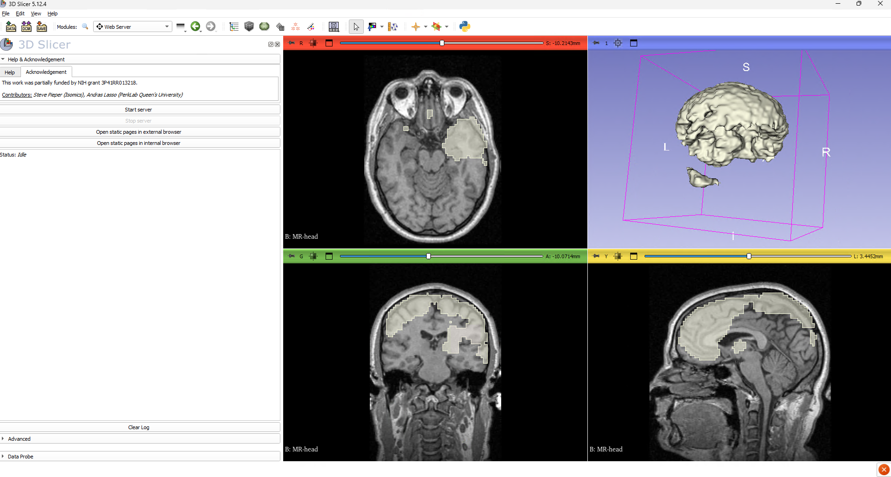

3D Slicer¶
Overview¶
Service Offering¶
Glasgow TRE can provide workstations with 3D Slicer, an open-source medical image computing, 3D visualization, and AI-assisted anatomical segmentation platform for clinical and biomedical imaging research. Researchers can inspect DICOM studies, perform manual and semi-automated 3D volume segmentation, run deep learning inference (TotalSegmentator and nnU-Net), and calculate quantitative comparison metrics entirely offline within the secure environment.

Version & Pre-Configured Environment¶
Workstations provisioned with 3D Slicer 5.12.4 (revision 34645, 64-bit) arrive fully pre-configured out of the box:
- Pre-installed AI & Segmentation Extensions:
All core extensions and their embedded Python dependencies (PyTorch 2.14.1+cu130,torchvision,nnunetv2,totalsegmentator,nibabel,dicom2nifti) are pre-installed for GPU-accelerated execution. -
Pre-configured Light Model Weights:
Workstations are pre-seeded and pre-configured to use the light (fast, 3 mm) pretrained model weights (Dataset297_TotalSegmentator_total_3mm_1559subj), stored locally inC:\ProgramData\TotalSegmentator\weights. Both the TotalSegmentator and nnUNet modules automatically point to these weights at startup without requiring manual downloads or configuration. -
Offline Operation:
Glasgow TRE has no external internet access. Automatic update checks, the online Extensions Manager, and external sample data downloads are disabled by policy.
Recommended Workstation Specifications¶
Medical volume rendering and 3D deep learning segmentation are memory- and compute-intensive. For optimal performance, 3D Slicer and its bundled AI extensions work best on a workstation configured with:
| Resource | Recommended Specification | Notes |
|---|---|---|
| System Memory (RAM) | 32 GB | Required for loading multi-series 3D DICOM/NIfTI volumes and running nnU-Net preprocessing workers in parallel. |
| Processor (vCPU) | 8 CPUs | Accelerates image resampling, marching cubes surface generation, and NIfTI export. |
| GPU Memory (VRAM) | At least 4 GB GPU (8 GB+ GPU for normal full-resolution segmentations) | 4 GB VRAM is sufficient for pre-configured light/fast (3 mm) segmentations (Dataset297). 8 GB or more VRAM is required if you run normal (1.5 mm full-resolution) multi-part segmentations. |
Local System Disk (C:) |
100 GB+ | Accommodates the local DICOM database cache (%LOCALAPPDATA%), CUDA libraries, and temporary inference volumes. |
Requesting GPU Capacity
If your project requires full-resolution (1.5 mm) anatomical segmentation or custom high-resolution nnU-Net models and your workstation has a 4 GB vGPU profile, contact the TRE helpdesk to request an 8 GB+ vGPU allocation.
Bundled Extensions¶
Every 3D Slicer workstation includes the following pre-installed extensions:
- TotalSegmentator — Automated whole-body CT and MRI anatomical structure segmentation powered by
nnU-Net. Pre-configured with offline light (3 mm) weights inC:\ProgramData\TotalSegmentator\weightsvia theTOTALSEG_WEIGHTS_PATHsystem environment variable. - NNUNet (
SlicerNNUNet) — Deep learning biomedical segmentation framework for running custom or pre-seedednnU-Net v2models directly inside Slicer. Pre-configured at startup to point toC:/ProgramData/TotalSegmentator/weights/Dataset297_TotalSegmentator_total_3mm_1559subj/nnUNetTrainer_4000epochs_NoMirroring__nnUNetPlans__3d_fullresoncuda(fold_0). - PyTorch (
SlicerPyTorch) — Embedded PyTorch management utility paired withtorch==2.14.1+cu130andtorchvision==0.29.1+cu130for NVIDIA CUDA GPU acceleration. - SegmentEditorExtraEffects — Additional interactive tools in the Segment Editor module, including Surface Cut, Draw Tube, Fast Marching, Watershed, and Split Volume.
- MarkupsToModel — Generates 3D surface models (
vtkPolyData) from fiducial points, closed curves, and planes for surgical planning and anatomical region definition. - MONAILabel — Interactive AI-assisted annotation and active learning client for connecting to local MONAI Label inference servers.
- SegmentComparison (
SlicerRT) — Quantitative segmentation evaluation tools from the SlicerRT suite for computing Dice Similarity Coefficient and Hausdorff Distance metrics between ground-truth and predicted segmentations.
Getting Started¶
You can launch 3D Slicer from your desktop:
- Double-click the 3D Slicer 5.12.4 shortcut on your desktop.
- By default, the shortcut starts in your project analytical workspace (
V:\).
Save Outputs and Scenes to Your Project Drive (V:\)
Always save your segmented NIfTI/NRRD volumes, MRML scenes (.mrb / .mrml), and exported tables to your project drive (V:\<project-name>\). The local C: drive (including the local DICOM cache) is not backed up across sessions.
How-To Guides¶
Import and inspect DICOM studies¶
- Click the DCM (DICOM) button in the top toolbar.
- Click Import DICOM files, browse to your study folder on
V:\, and click Import. - Select the imported patient/study in the DICOM browser and click Examine then Load.
Local DICOM Database for Fast Indexing
3D Slicer is pre-configured to store its SQLite DICOM index locally at C:\Users\<username>\AppData\Local\slicer.org\DICOMDatabase so indexing remains fast and avoids network file-locking issues. Keep your raw imaging datasets on V:\.
Run automated segmentation with TotalSegmentator¶
- Load your CT or MRI volume into Slicer from
V:\. - Open the Modules dropdown menu and select Segmentation → TotalSegmentator.
- Select your loaded scan as the Input volume.
- Ensure the Fast (3mm) checkbox is ticked (workstations come pre-configured with the light
3 mmmodel weights). - Create a new Output segmentation node and click Apply.
- On a workstation with a 4 GB+ NVIDIA GPU, fast whole-body segmentation completes in approximately 20–30 seconds.
Run inference with the nnUNet module¶
- Load your input volume into Slicer.
- Open Modules → Segmentation → nnUNet.
- Under nnUNet Run Settings, the module is already pre-configured with:
- Model path:
C:/ProgramData/TotalSegmentator/weights/Dataset297_TotalSegmentator_total_3mm_1559subj/nnUNetTrainer_4000epochs_NoMirroring__nnUNetPlans__3d_fullres - Device:
cuda - Folds:
0 - Checkpoint name:
checkpoint_final.pth - Select your Input volume and click Apply.
- If you bring your own custom trained
nnU-Netweights onV:\, click the...button next to Model path and select the folder containing your model'sdataset.json,plans.json, andfold_<N>directory.
Compare two segmentations (Dice & Hausdorff metrics)¶
- Open Modules → Radiotherapy → Segment Comparison (provided by
SlicerRT). - Select your reference segmentation and the segmentation to compare.
- Choose an output table and click Compute Dice similarity metrics and Compute Hausdorff distance metrics.
Run headless batch processing from PowerShell¶
You can automate volume processing or batch segmentation scripts from PowerShell using Slicer.exe or PythonSlicer.exe:
# Run a Python script inside Slicer without opening the main window
& "C:\Program Files\Slicer 5.12.4\Slicer.exe" --launcher-no-splash --no-main-window --python-script "V:\my-project\scripts\batch_segment.py"
Settings and Troubleshooting¶
- Settings roam across workstations:
Your module preferences and UI settings in%APPDATA%\slicer.orgfollow your user profile, while large pretrained weights (C:\ProgramData\TotalSegmentator\weights) and the DICOM SQLite database (%LOCALAPPDATA%) stay on fast local storage. - Out of GPU memory (
CUDA out of memory):
Close unused 3D views, enable the Fast (3mm) option in TotalSegmentator, or request an 8 GB+ vGPU profile if running full-resolution (1.5 mm) segmentations. - Need an additional extension or pretrained model?
Because workstations operate offline, extensions and Python wheels cannot be installed from the internet. Contact the helpdesk at tre@glasgow.com to request staging a new extension or model weight archive on the internal mirror.
Related Documentation¶
- Python Core — Custom image analysis and tabular post-processing in Python.
- Jupyter Notebooks — Interactive notebooks for statistical analysis of segmentation metrics.
- Data Transfer Guidelines — Importing imaging datasets and exporting approved research outputs.